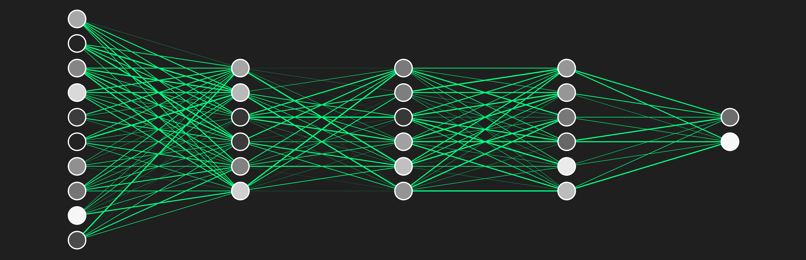
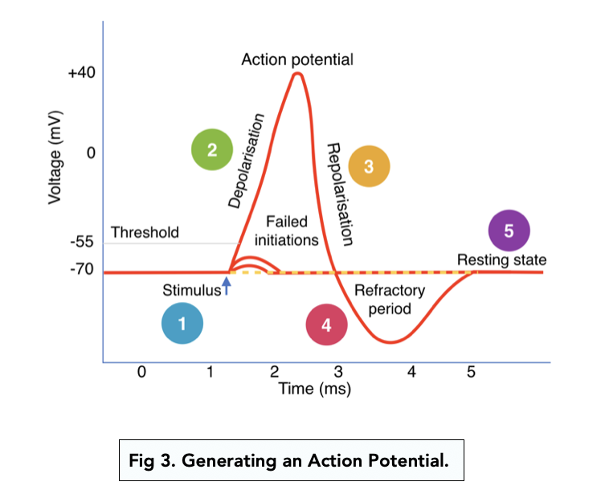
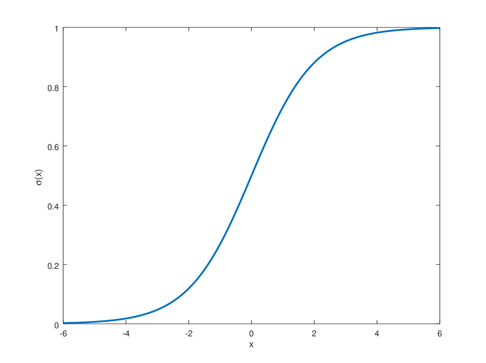
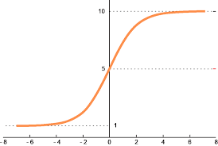
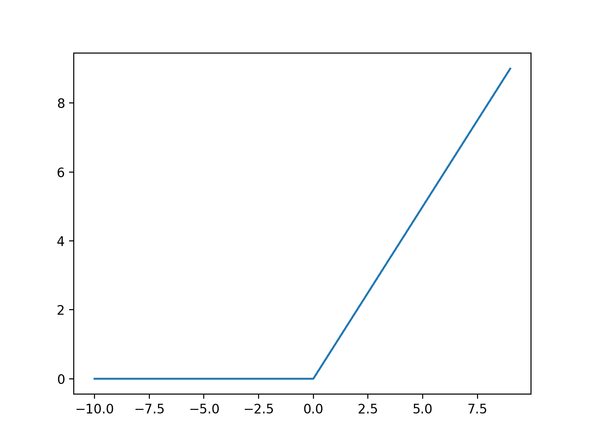
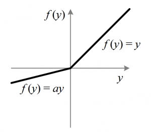
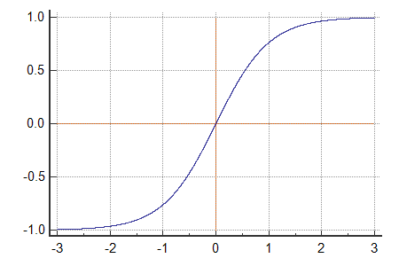
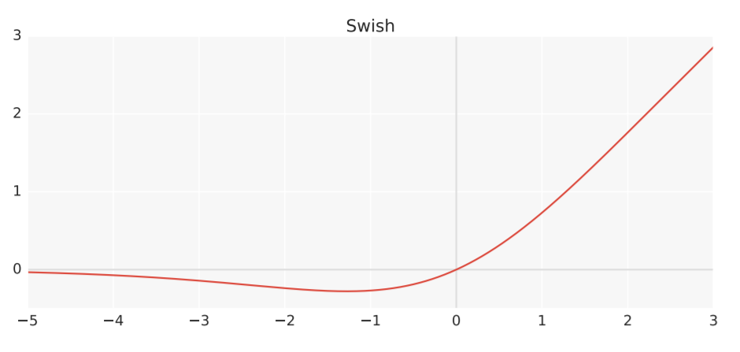
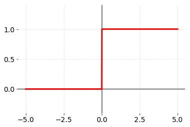

Previously, Pikachu built a linear regression model to do things like weather forecasting. Recently, Neural Networks (NN) have become quite the hype. Google defines it as "a machine learning model inspired by the human brain, designed to recognize patterns and process data." Quite Novel! Underneath the smoke and mirrors, I am going to tell you a secret. A NN is nothing but a linear regression model! However, it has a gate. That gate decides how much of a response we should fire. Sometimes, we can choose to fire an all or nothing response similar to the synapses in our brain.

Before talking about activation functions, what are we doing? With NNs, we are basically chaining a bunch of linear regression models together to hopefully get a meaningful output. We will then install a gating mechanism to determine how much we want the output. To model this all or nothing response, we use something called an activation function. It tells our a nueron (some result from our regression model) how much we should open our gate. By doing this, we have introduced nonlinearity to our otherwise linear regression model. Otherwise, our model would be just another linear regression model.
Which activation function is the best? We don't know! This is an area of active research. Again, each layer can be represented by some linear function. We will denote the parameters or weights as $W$ and $b$ as the intercept or bias. $$ y = mx + b \Rightarrow y = Wx + b $$ Adding an activation function $\phi(x)$: $$ y = \phi(Wx + b) $$ Now we can choose any activation function $\phi(x)$ to scale (or turn on / off) our layer's output. Instead of a bunch of composite linear functions: $$ y = W_3 (W_2 (W_1 x + b_1) + b_2) + b_3 = mx + b $$ We transformed our function with non linearity: $$ \phi_3(W_3 \phi_2(W_2 \phi_1(W_1 x + b_1) + b_2) + b_3) $$
| Name | Image | Description | Formula |
|---|---|---|---|
| Sigmoid |
 |
Maps input to a probability between 0 and 1. | $$ \phi(x) = \frac{1}{1 + e^{-x}} $$ |
| Softmax |  |
Turns each input (multi-input) into a probability. | $$ \phi(x_i) = \frac{e^{x_i}}{\sum_j e^{x_j}} $$ |
| ReLu |  |
Discards negative part. Non-diffrentiable because of kink at 0. | $$ \phi(x) = \max(0, x) $$ |
| Leaky ReLu |  |
ReLu but allow a small negative slope for negative inputs. Non-diffrentiable because of kink at 0. | $$ \phi(x) = \max(\alpha x, x), \ \alpha < 1 $$ |
| Tanh |  |
Maps values to the range from -1 to 1 with zero-centered output. | $$ \phi(x) = \frac{e^x - e^{-x}}{e^x + e^{-x}} $$ |
| Swish |  |
Like Nike swoosh. Multiplies input sigmoid gate for a smooth nonlinear response. | $$ \phi(x) = x \cdot \text{sigmoid}(x) = \frac{x}{1 + e^{-x}} $$ |
| Step |  |
All or nothing above some threshold. Usually don't use because gradient not defined (*) | $$ \phi(x) = \begin{cases} 0 & \text{if } x < 0,\\ 1 & \text{if } x \ge 0. \end{cases} $$ Where 0 is some threshold $\gamma$ that can be adjusted. |
Remember when performing gradient descent, we prefer our functions to be differentiable. This will matter during backpropogation, a method the NN uses to update weights. However, notice that functions like ReLu are not differentiable. To get around this we can use a subgradient value for ReLu and Leaky ReLu: $$ \tilde g'(a)= \begin{cases} 1 & a > 0 \\ 0 & a < 0 \\ [0,1] & a = 0 \quad \text{any value between 0 and 1} \end{cases} $$ Valid subgradient values are usually mathematically defined especially for different piecewise functions. Always try to avoid setting undefined gradient values of 0 as this leads to vanishing gradient (*).
TLDR; Activation functions act as a gate that signals the strength of output from different linear regression neurons. This introduces nonlinearity to an otherwise chain of linear functions allowing our NN (a complex function we make) to model non-linear relation from data.